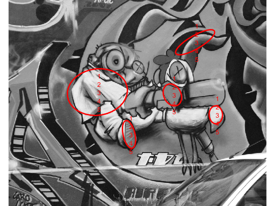

Contents
timestamp
fprintf(1,'Evaluation started at %s', datestr(now));
Evaluation started at 24-Jun-2018 19:52:47
detection of affine regions ininput images and visualisation of preselected regions
corrs = [ 508 184 262 520 211;
553 200 291 559 222];
sz = size(corrs,2);
detection
p=[]; p.color='r'; p.linewidth=2; opts.showids=1; opts.cutoff=2;
im1=im2double(rgb2gray(imread('img1.png')));
pts1=mser_detector(im1);
ptsc1=pts1(corrs(1,:));
figure; set(gca,'position', [0 0 1 1]); imagesc(im1,[0 1]); colormap gray; showpts(ptsc1, p, opts); axis('image','off');
im2=im2double(rgb2gray(imread('img2.png')));
pts2=mser_detector(im2);
ptsc2=pts2(corrs(2,:));
figure; set(gca,'position', [0 0 1 1]); imagesc(im2,[0 1]); colormap gray; showpts(ptsc2, p, opts); axis('image','off');
MSER+ inten. : OK, 169 regions in 0.044 sec
MSER- inten. : OK, 407 regions in 0.066 sec
MSER+ inten. : OK, 186 regions in 0.062 sec
MSER- inten. : OK, 480 regions in 0.085 sec

visualisation of frames
of=[];
of.show_unit_vectors=1;
of.ext=3; of.ps=51;
p=[]; p.color='y'; p.linewidth=2;
selected corresponding frames (without rotation)
f1=getframes(ptsc1);
figure; set(gca,'position', [0 0 1 1]); imagesc(im1,[0 1]); colormap gray; showframes(f1, p, of); axis('image','off');
f2=getframes(ptsc2);
figure; set(gca,'position', [0 0 1 1]); imagesc(im2,[0 1]); colormap gray; showframes(f2, p, of); axis('image','off');

dominant orientation estimation
of.show_unit_vectors=0;
p=[]; p.color='y'; p.linewidth=2;
h=figure('units', 'char', 'position', [0 0 180 35]);
la=cell(1,sz);
for i=1:sz
tmp = affinetr(im1, f1(:,:,i), of.ps, of.ext);
la{i} = dom_orientation(tmp);
ax=subplot(2,sz,i, 'parent', h); imagesc(tmp,'parent',ax); colormap(ax,'gray'); axis(ax,'image','off');
for j=1:numel(la{i})
line([0 cos(la{i}(j))*of.ps/of.ext]+of.ps/2+1, ...
[0 sin(la{i}(j))*of.ps/of.ext]+of.ps/2+1, 'parent', ax, 'color', 'm', 'linewidth', 2);
end;
end;
ra=cell(1,sz);
for i=1:sz
tmp = affinetr(im2, f2(:,:,i), of.ps, of.ext);
ra{i} = dom_orientation(tmp);
ax=subplot(2,sz,sz+i, 'parent', h); imagesc(tmp,'parent',ax); colormap(ax,'gray'); axis(ax,'image','off');
for j=1:numel(ra{i})
line([0 cos(ra{i}(j))*of.ps/of.ext]+of.ps/2+1, ...
[0 sin(ra{i}(j))*of.ps/of.ext]+of.ps/2+1, 'parent', ax, 'color', 'm', 'linewidth', 2);
end;
end;
affine frames (without rotation) with dominant orientation vector projected
figure; set(gca,'position', [0 0 1 1]); imagesc(im1,[0 1]); colormap gray; axis('image','off'); p.parent=gca;
of.show_orientation=la;
showframes(f1, p, of);
figure; set(gca,'position', [0 0 1 1]); imagesc(im2,[0 1]); colormap gray; axis('image','off'); p.parent=gca;
of.show_orientation=ra;
showframes(f2, p, of);
euclidean normalization (translation+dominant orientation) of patches
of=[];
of.show_unit_vectors=1;
of.ext=3; of.ps=51;
s1 = 15;
s2 = 15;
tic
p1=transnorm(im1,[ptsc1.x],[ptsc1.y],s1,of);
p2=transnorm(im2,[ptsc2.x],[ptsc2.y],s2,of);
toc
h=figure('units', 'char', 'position', [0 0 180 35]);
for i=1:sz,
ax=subplot(2,sz,i,'parent',h); imagesc(p1(i).patch,'parent',ax, [0 1]); colormap(ax,'gray'); axis(ax,'image','off');
ax=subplot(2,sz,sz+i,'parent',h); imagesc(p2(i).patch,'parent',ax, [0 1]); colormap(ax,'gray'); axis(ax,'image','off');
end;
figure; set(gca,'position', [0 0 1 1]); imagesc(im1,[0 1]); colormap gray; axis('image','off'); p.parent=gca;
showframes(p1, p, of);
figure; set(gca,'position', [0 0 1 1]); imagesc(im2,[0 1]); colormap gray; axis('image','off'); p.parent=gca;
showframes(p2, p, of);
Elapsed time is 0.111343 seconds.
similarity normalization (x,y,s+dominant orientation) of patches
s1 = sqrt([ptsc1.a11].*[ptsc1.a22]-[ptsc1.a12].*[ptsc1.a21]);
s2 = sqrt([ptsc2.a11].*[ptsc2.a22]-[ptsc2.a12].*[ptsc2.a21]);
tic
p1=simnorm(im1,[ptsc1.x],[ptsc1.y],s1,of);
p2=simnorm(im2,[ptsc2.x],[ptsc2.y],s2,of);
toc
h=figure('units', 'char', 'position', [0 0 180 35]);
for i=1:sz,
ax=subplot(2,sz,i,'parent',h); imagesc(p1(i).patch,'parent',ax, [0 1]); colormap(ax,'gray'); axis(ax,'image','off');
ax=subplot(2,sz,sz+i,'parent',h); imagesc(p2(i).patch,'parent',ax, [0 1]); colormap(ax,'gray'); axis(ax,'image','off');
end;
figure; set(gca,'position', [0 0 1 1]); imagesc(im1); colormap gray; axis('image','off'); p.parent=gca;
showframes(p1, p, of);
figure; set(gca,'position', [0 0 1 1]); imagesc(im2); colormap gray; axis('image','off'); p.parent=gca;
showframes(p2, p, of);
affine normalization of patches
tic
p1=affnorm(im1,[ptsc1.x],[ptsc1.y],[ptsc1.a11],[ptsc1.a12], [ptsc1.a21], [ptsc1.a22],of);
p2=affnorm(im2,[ptsc2.x],[ptsc2.y],[ptsc2.a11],[ptsc2.a12], [ptsc2.a21], [ptsc2.a22],of);
toc
h=figure('units', 'char', 'position', [0 0 180 35]);
for i=1:sz,
ax=subplot(2,sz,i,'parent',h); imagesc(p1(i).patch,'parent',ax, [0 1]); colormap(ax,'gray'); axis(ax,'image','off');
ax=subplot(2,sz,sz+i,'parent',h); imagesc(p2(i).patch,'parent',ax, [0 1]); colormap(ax,'gray'); axis(ax,'image','off');
end;
figure; set(gca,'position', [0 0 1 1]); imagesc(im1,[0 1]); colormap gray; axis('image','off'); p.parent=gca;
showframes(p1, p, of);
figure; set(gca,'position', [0 0 1 1]); imagesc(im2,[0 1]); colormap gray; axis('image','off'); p.parent=gca;
showframes(p2, p, of);
Elapsed time is 0.095015 seconds.
photometric normalization (of affine normalized patches)
tic
p1=photonorm(p1);
p2=photonorm(p2);
toc
h=figure('units', 'char', 'position', [0 0 180 35]);
for i=1:sz,
ax=subplot(2,sz,i,'parent',h); imagesc(p1(i).patch,'parent',ax, [0 1]); colormap(ax,'gray'); axis(ax,'image','off');
ax=subplot(2,sz,sz+i,'parent',h); imagesc(p2(i).patch,'parent',ax, [0 1]); colormap(ax,'gray'); axis(ax,'image','off');
end;
dct coefficients distance table
if exist('dctdesc')==2
for i=1:sz,
p1(i).desc=dctdesc(p1(i).patch, 31); p1(i).desc = p1(i).desc(:);
p2(i).desc=dctdesc(p2(i).patch, 31); p2(i).desc = p2(i).desc(:);
end;
dist=zeros(sz);
for i=1:sz
dist(i,:)=sum(([p1.desc]-repmat(p2(i).desc,1,sz)).^2);
end;
dist
figure; imagesc(dist); axis xy; colorbar; colormap('hot'); set(gca, 'xtick', [1:sz], 'ytick', [1:sz]);
else
fprintf('Missing DCTDESC function.\n');
end;
dist =
0.0414 0.0271 0.0165 0.0185 0.0319
0.0270 0.0177 0.0388 0.0273 0.0123
0.0438 0.0282 0.0002 0.0372 0.0414
0.0400 0.0263 0.0393 0.0014 0.0279
0.0331 0.0161 0.0434 0.0300 0.0005
comparison of corresponding dct coefficients
[ p1(1).desc(2:12)' ; p2(1).desc(2:12)' ]
ans =
Columns 1 through 7
0.4622 0.5301 0.4898 0.4937 0.4782 0.4519 0.4082
0.4118 0.5332 0.4709 0.4892 0.5114 0.5324 0.5356
Columns 8 through 11
0.5325 0.5123 0.5083 0.5091
0.4757 0.4862 0.5017 0.5301
comparison of non-corresponding dct coefficients
[ p1(2).desc(2:12)' ; p2(5).desc(2:12)' ]
ans =
Columns 1 through 7
0.4842 0.4783 0.4546 0.5052 0.4303 0.4883 0.5258
0.4837 0.5247 0.4207 0.4952 0.4138 0.4803 0.5025
Columns 8 through 11
0.5043 0.4944 0.4875 0.4899
0.5057 0.4979 0.5002 0.4885
dxdy gradient descs distance table
if exist('ghistodesc')==2
for i=1:sz,
p1(i).desc=ghistodesc(p1(i).patch, 10); p1(i).desc = p1(i).desc(:);
p2(i).desc=ghistodesc(p2(i).patch, 10); p2(i).desc = p2(i).desc(:);
end;
dist=zeros(sz);
for i=1:sz
dist(i,:)=sum(([p1.desc]-repmat(p2(i).desc,1,sz)).^2);
end;
dist
figure; imagesc(dist); axis xy; colorbar; colormap('hot'); set(gca, 'xtick', [1:sz], 'ytick', [1:sz]);
else
fprintf('Missing GHISTODESC function.\n');
end;
Missing GHISTODESC function.
SIFT descs distance table
if exist('siftdesc')==2
for i=1:sz,
p1(i).desc=siftdesc(p1(i).patch); p1(i).desc = p1(i).desc(:);
p2(i).desc=siftdesc(p2(i).patch); p2(i).desc = p2(i).desc(:);
end;
dist=zeros(sz);
for i=1:sz
dist(i,:)=sum(([p1.desc]-repmat(p2(i).desc,1,sz)).^2);
end;
dist
figure; imagesc(dist); axis xy; colorbar; colormap('hot'); set(gca, 'xtick', [1:sz], 'ytick', [1:sz]);
else
fprintf('Missing SIFTDESC function.\n');
end;
Missing SIFTDESC function.
timestamp
fprintf(1,'Finished at %s', datestr(now));
Finished at 24-Jun-2018 19:53:03